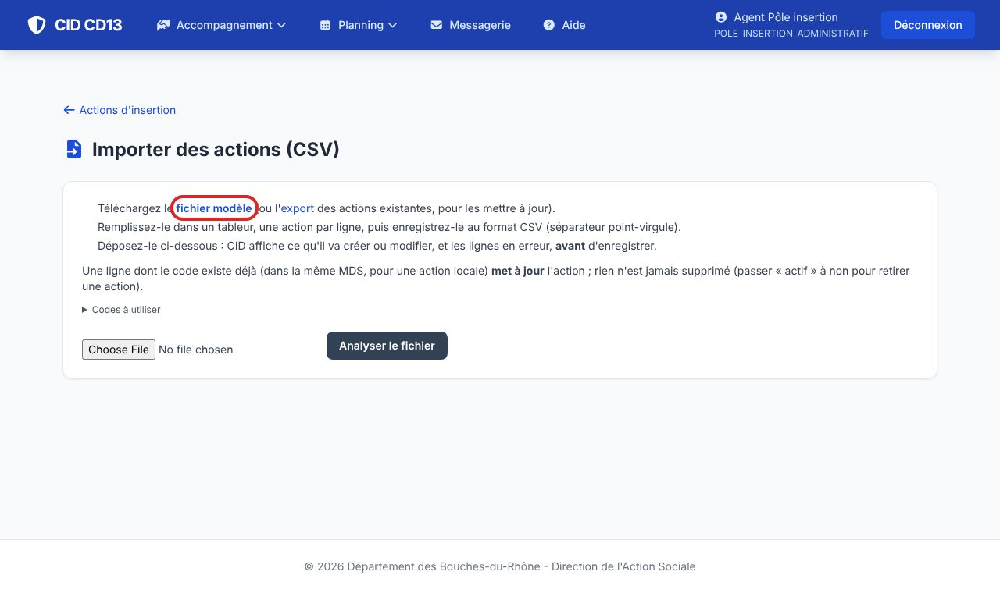
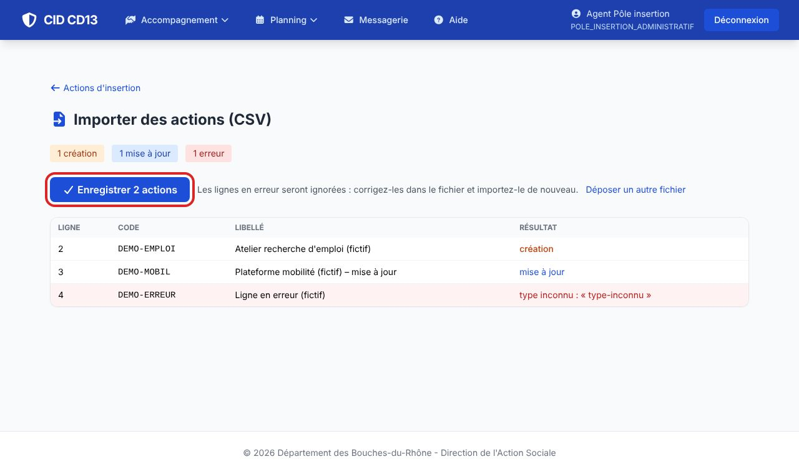
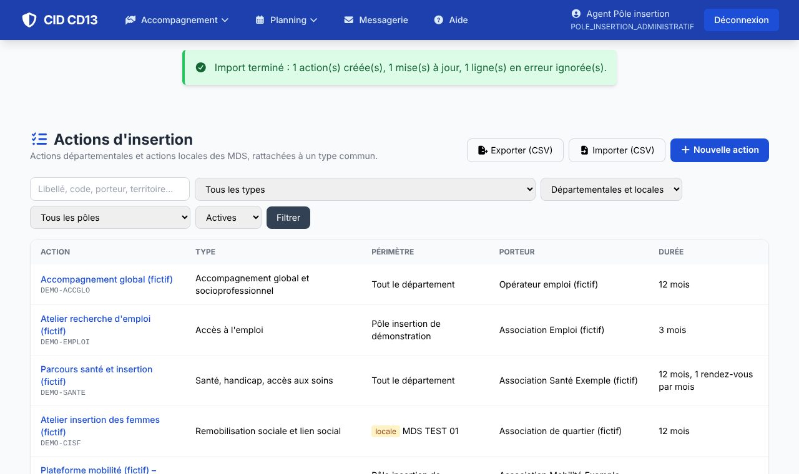
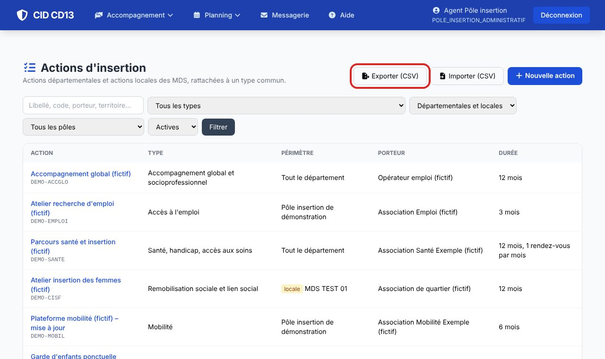

1Préparer le fichier

- Téléchargez le fichier modèle (ou l'export des actions existantes pour les mettre à jour).
- Une action par ligne : code, libellé, type (code de la liste « Codes à utiliser »), niveau (DEPARTEMENTAL ou LOCAL), MDS pour une action locale, pôles…
- Enregistrez au format CSV, séparateur point-virgule.
2Analyser, puis enregistrer


- Déposez le fichier et cliquez sur Analyser le fichier : rien n'est encore enregistré.
- L'aperçu donne, ligne par ligne, les créations, les mises à jour (code déjà connu) et les erreurs (type inconnu, droits insuffisants…).
- Cliquez sur Enregistrer : les lignes en erreur sont ignorées ; corrigez-les dans le fichier et importez-le de nouveau.
3Exporter

- Exporter (CSV) produit un fichier au même format : modifiez-le et réimportez-le pour des mises à jour en masse.
Bon à savoir
- Rien n'est jamais supprimé par un import : pour retirer une action, mettez « actif » à non.
- Chaque ligne est contrôlée avec vos droits : un cadre de MDS n'importe que les actions locales de sa MDS.
Cliquez sur une image pour l'agrandir. Le cadre rouge montre où cliquer ou quoi remplir. Toutes les données affichées sont fictives.